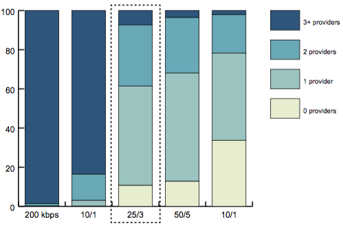

<div class="map container-fluid">
  <div class="row">
    <div class="col-sm-7">
      <div class="page-header">
        <h1>Fixed Broadband at a Location</h1>
      </div>
    </div>
  </div>
  <div class="row">
    <nb-map type="comparison" defaultSearch="County"></nb-map>
    <nb-map-sidebar>
      <h2 class="sub-title" slot="sidebar-title"><b>Sangamon County, IL</b></h2>      
      <div class="charts" slot="charts">
        <figure class="item active">
            
            <figcaption>Speed (Mbps downstream/upstream)</figcaption>
        </figure>        
      </div>
      <section class="map-legend" slot="map-legend">
        <h5><b>Population weighted average number of providers</b></h5>
        <ul class="list-unstyled">
                <li>
                    <div class="key-symbol" style="background-color: #e7efd0)"></div>
                    ≤ 0.5
                </li>
                <li>
                    <div class="key-symbol" style="background-color: #e7efd0"></div>
                    ≤ 1.0
                </li>
                <li>
                    <div class="key-symbol" style="background-color: #69a8b8"></div>
                    ≤ 1.5
                </li>
                <li>
                    <div class="key-symbol" style="background-color: #4a7e98"></div>
                    ≤ 2.0
                </li>
                <li>
                    <div class="key-symbol" style="background-color: #4a7e98"></div>
                    &gt; 2.0
                </li>
            </ul>
      </section>
    </nb-map-sidebar>
  </div>
</div>
